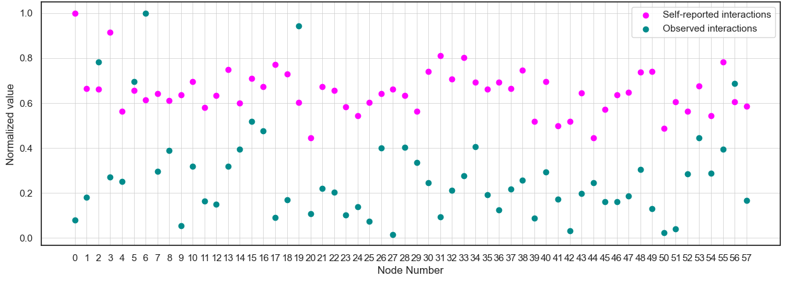

The plot above illustrates a disparity between self-reported interactions and observed interactions, with the former being consistently higher than the latter. This discrepancy could be interpreted in two ways: either the fraternity students are overestimating their social interactions, or the data for observed interactions is insufficiently comprehensive. The latter scenario would suggest that some interactions have gone unrecorded.